DreamZero: World Action Models are Zero-shot Policies
论文信息 - 作者：Seonghyeon Ye, Yunhao Ge, Kaiyuan Zheng, Shenyuan Gao, Sihyun Yu, ..., Joel Jang（NVIDIA GEAR Lab, 共 39 位作者） - 通讯作者/项目负责人：Seonghyeon Ye, Yuke Zhu, Linxi "Jim" Fan, Joel Jang - 投稿方向：NVIDIA Tech Report（arXiv 2602.15922, 2026 年 2 月） - 代码：https://github.com/dreamzero0/dreamzero（Apache 2.0 开源） - 模型规模：14B 参数，基于 Wan2.1-I2V-14B-480P 视频扩散 backbone
一、核心问题
当前最强的 Vision-Language-Action（VLA）模型在语义级泛化（例如识别未见过的物体）方面表现出色，但在两类关键泛化能力上存在根本性短板：
- 环境泛化（Environment Generalization）：将已知任务换到新环境执行时性能骤降
- 技能/动作泛化（Skill/Motion Generalization）：面对训练数据中从未出现的新动作（如"解鞋带""熨衣服"）完全失败
根本原因在于：VLA 从 VLM 继承的是"知道做什么"（语义先验），但缺乏"知道怎么做"的物理先验——即对几何结构、动力学和运动控制的精确空间理解。
VLA priors encode what to do at a semantic level, but lack representations of how actions should be executed with precise spatial awareness.
此外，传统 VLA 训练通常依赖每个任务的大量重复演示（repetitive demonstrations），难以有效利用异构、非重复的多样机器人数据。
二、核心思路 / 方法
2.1 World Action Model (WAM) 概念
DreamZero 提出了 World Action Model（WAM） 这一概念：基于预训练视频扩散模型，同时预测未来的视频帧和对应的机器人动作。核心直觉是：
- 视频扩散模型在互联网规模数据上预训练，已经内化了丰富的时空物理先验
- 通过联合建模视频和动作，将"action learning"从稠密的状态-动作模仿问题转化为逆动力学（inverse dynamics）问题——即学习从预测的视觉未来中提取可执行的动作
- 这一转化使得模型可以从异构、非重复的多样数据中高效学习

图1：DreamZero 总览。通过联合预测视频和动作，WAM 获得四个核心能力：(1) 从多样、非重复数据中高效学习，(2) 开放世界泛化，(3) 仅用视频数据的跨具身学习，(4) 对新机器人的 few-shot 适应。
2.2 问题形式化
DreamZero 将问题形式化为联合预测问题：
其中：
- $\mathbf{o}$ 为视频观测，$\mathbf{a}$ 为动作，$\mathbf{c}$ 为语言指令，$\mathbf{q}$ 为本体感知状态
- 右侧第一项是视频预测，第二项是逆动力学模型（IDM）
与传统方法不同，DreamZero 使用单一模型端到端地联合学习这两部分，而不是用两个独立模型分别建模。
2.3 模型架构
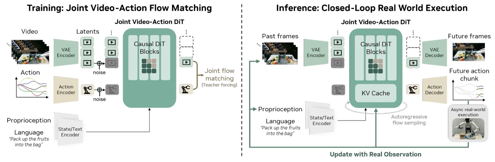
图2：DreamZero 模型架构。模型接受三类输入：视觉上下文（经 VAE 编码）、语言指令（经 Text Encoder）、以及本体感知状态（经 State Encoder）。这些输入由自回归 DiT backbone 通过 Flow Matching 处理，分别经由 Video Decoder 和 Action Decoder 输出预测的未来视频帧和动作。训练时（左），对每个 chunk 基于干净视频上下文对加噪的视频和动作 latent 进行去噪。推理时（右），动作异步在真实世界执行，真实观测替换 KV cache 中的预测帧以防止误差累积。
架构要点：
1. 自回归（AR）架构
- 以 chunk 为单位自回归生成：每个 chunk 包含 $K$ 个 latent 帧（$K=2$），对应固定的动作 horizon
- AR 架构的优势：(a) 通过 KV-cache 实现更快推理，(b) 可利用视觉观测历史做引导，(c) 保留原生帧率，确保视频-动作的精确对齐
- 双向模型需要子采样视频来匹配语言标注间隔，会扭曲原生 FPS，破坏视频-动作对齐
2. 注意力机制（Attention Mask）
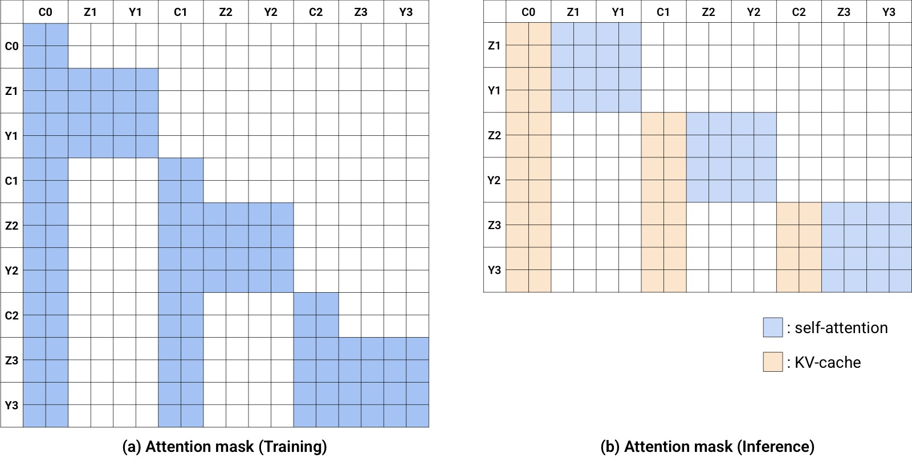
图3：DreamZero 注意力策略。(a) 训练的 QKV Self-Attention mask：Y 轴为 Query(Q)，X 轴为 Key/Value(KV)。给定条件帧 (C0, C1, C2)，模型预测后续帧 (Z1, Z2, Z3) 和动作 (Y1, Y2, Y3) 的速度。每个 noisy chunk 可关注前序干净 chunk 的上下文。(b) 推理时，先计算条件帧的 KV-cache，然后拼接后预测动作和帧。例如 Y3（动作）关注 C0, C1, C2，利用视觉历史来预测当前动作。关键设计：推理时 C0, C1, C2 被替换为真实观测。
3. Flow Matching 训练目标
采用 Flow Matching 作为训练目标，视频和动作共享相同的去噪时间步（基础版本）：
其中速度目标 $\mathbf{v}^{k} \coloneqq [\mathbf{z}_{1}^{k}, \mathbf{a}_{1}^{k}] - [\mathbf{z}_{0}^{k}, \mathbf{a}_{0}^{k}]$。
4. 推理时的闭环设计（关键创新）
推理的核心优势是用真实观测替换 KV cache 中的预测帧：
- 推理时异步执行：模型推断和动作执行解耦
- 执行完一个 action chunk 后，将真实世界观测编码后注入 KV cache，丢弃预测的视频 latent
- 这从根本上消除了自回归视频生成的累积误差问题——这是 WAM 独有的优势
5. 自回归 vs 双向架构对比
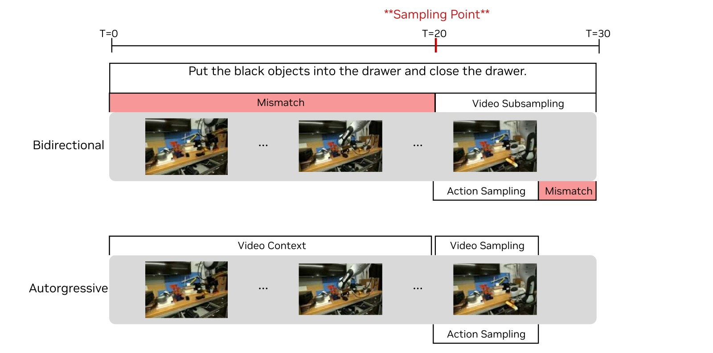
图4：双向 vs 自回归 WAM。当采样点落在任务中间（T=20），双向 WAM 必须对视频进行子采样来匹配语言标注间隔，扭曲了原生 FPS 并破坏视频-动作对齐。自回归 WAM 通过条件化视频上下文而非子采样，避免了这种权衡。蓝色高亮帧为预测目标，灰色帧为上下文。
2.4 实时推理优化（38x 加速）
14B 视频扩散模型在单 GPU 上无优化时，每次动作推断需约 5.7 秒，无法用于闭环控制。DreamZero 引入三层优化：
系统级优化：
- CFG 并行：将有条件/无条件两个前向传播分布到两块 GPU，减少 47% 步骤延迟
- DiT Caching：利用 Flow Matching 速度向量的方向一致性，当连续速度预测的余弦相似度超过阈值时重用缓存速度，将有效 DiT 步数从 16 步降至 4 步
实现级优化：
- Torch Compile + CUDA Graphs：对五个组件（DiT、scheduler、text encoder、image encoder、VAE）编译
- NVFP4 量化：在 Blackwell 架构上将权重和激活量化为 4-bit，敏感操作（QKV、Softmax）保留 FP8
- cuDNN attention kernels + GPU scheduler
模型级优化 —— DreamZero-Flash：
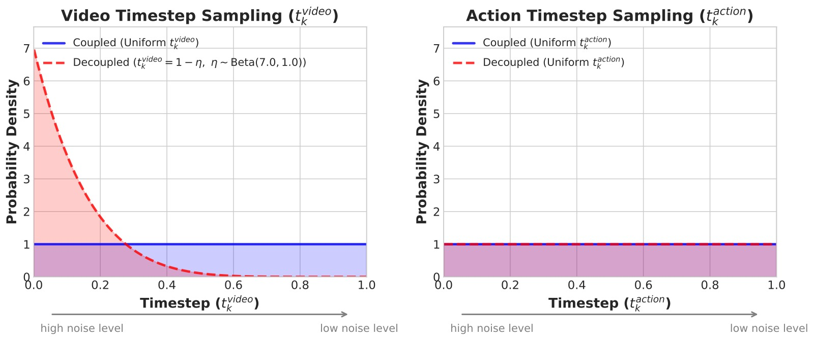
图5：解耦噪声调度。标准 DreamZero（蓝色）使用耦合噪声分布（视频和动作都是 uniform 分布）。DreamZero-Flash（红色）将视频时间步偏向高噪声状态（Beta(7,1) 分布，均值 = 0.125），动作保持 uniform，训练模型在高噪声视觉上下文下预测干净动作，使训练和少步推理的分布对齐。
核心洞察：标准训练时视频和动作在同一噪声水平，但少步推理时动作需要在视频仍 noisy 时去噪到干净值——存在 train-test mismatch。DreamZero-Flash 通过训练时偏向视频噪声（Beta(7,1)）来解决，使单步去噪（150ms）达到 4 步去噪的 90% 性能。
累计加速效果：
| 优化类别 | H100 | GB200 |
|---|---|---|
| Baseline | 1x | 1.1x |
| + CFG 并行 | 1.9x | 1.8x |
| + DiT Caching | 5.5x | 5.4x |
| + Torch Compile + CUDA Graphs | 8.9x | 10.9x |
| + Kernel & Scheduler 优化 | 9.6x | 14.8x |
| + NVFP4 量化 | — | 16.6x |
| + DreamZero-Flash | — | 38x |
最终在 2x GB200 上达到 7Hz 实时闭环控制（~150ms/action chunk）。
2.5 训练与数据配置
- Backbone：Wan2.1-I2V-14B-480P（14B 图像到视频扩散模型）
- 训练步数：100K steps，全局 batch size 128
- 更新策略：更新所有 DiT block、state encoder、action encoder、action decoder（LoRA 实验效果不佳，改为全参更新），冻结 text encoder、image encoder、VAE
- 数据：AgiBot G1 约 500 小时遥操作数据（22 个环境）；Franka 使用 DROID 数据集
- 视频采样：5 FPS；动作采样：30Hz（AgiBot）/ 15Hz（DROID）
- 动作 horizon：48（AgiBot）/ 24（DROID），每 chunk 1.6 秒
- 多视图处理：将多个相机视图拼接为单帧（2x2 或特殊 grid），无需修改 backbone 架构
三、关键洞察与技术亮点
3.1 "改进视频生成 = 改进策略"
论文的核心发现：大多数 DreamZero 失败案例源于视频预测错误，而非动作提取错误。策略忠实地执行视频预测出的轨迹——这意味着改进视频 backbone 的质量将直接转化为更好的策略性能。这使得 WAM 的性能提升可以借助视频生成领域的持续进步。
3.2 多样数据优于重复数据
即使数据总量相同（500 小时），在 22 个环境中采集的多样化数据（50% 任务进度）显著优于 70 个任务的重复数据（33% 任务进度）。直觉解释：WAM 的视频预测能力大多继承自预训练，关键瓶颈是学习鲁棒的逆动力学模型——而多样的状态-动作对应关系正是构建鲁棒 IDM 的必要条件。
3.3 模型规模的正向缩放
14B 模型显著优于 5B 模型（50% vs 21%），小模型容易出现视觉幻觉并传播到错误动作。相比之下，将 VLA 从 5B 扩展到 14B 仍然无法从多样数据中学习（0% 任务进度）——单纯的模型规模扩展无法解决 VLA 在多样数据分布上的困难。
3.4 AR 架构：质量相当但更快更平滑
AR 和双向架构在任务进度上相近，但 AR 模型产生的动作更平滑（因为在完整动作序列上进行梯度反传），且推理速度快 3-4 倍（得益于 KV cache）。
四、实验与结果
4.1 实验设置
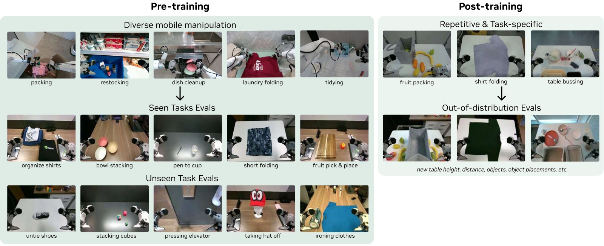
图6：AgiBot 评估设置。评测场景涵盖不同环境（不同地理位置，因此测试环境和训练环境分布不同）、不同物体。分为两类任务：seen tasks（10 个，80 次 rollout）和 unseen tasks（10 个，80 次 rollout）。每个任务在 4 台机器人上各执行 2 次，变换物体、位置和使用的机械臂。基线包括 GR00T N1.6 和 π₀.₅，各有两个初始化策略。
测试场景说明：由于训练数据和评测数据在不同地理位置采集，所有评测天然是分布外测试，而非训练分布内的插值。
数据统计：
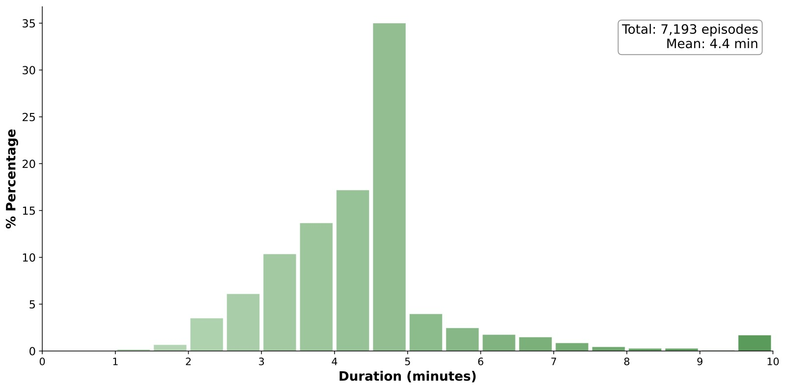
图7(a)：Episode 时长分布。平均每个 episode 约 4.4 分钟，远长于典型机器人操作数据集。
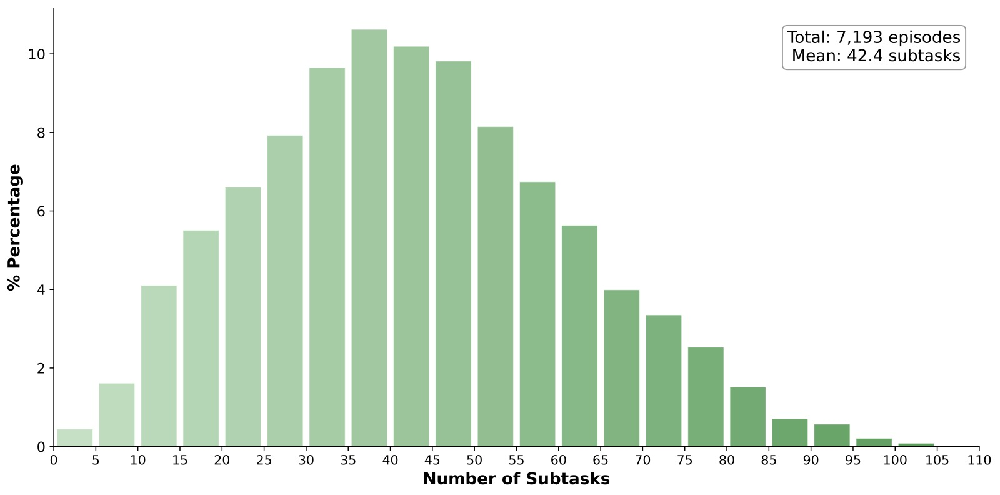
图7(b)：每 episode 子任务数。平均约 42 个子任务，反映了多任务 episode 结构的设计效果。
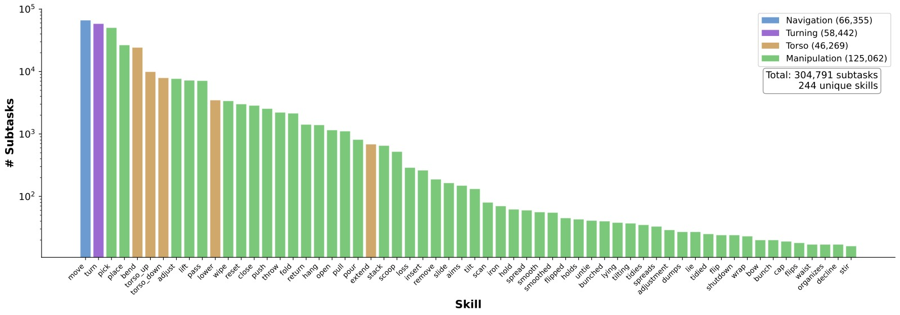
图7(c)：技能分布涵盖导航（Navigation）、躯干调节（Torso）、右臂、左臂等，反映了真实部署需求——导航实现工作区切换，躯干调节实现对不同高度物体的交互。
4.2 主实验一：已见任务泛化
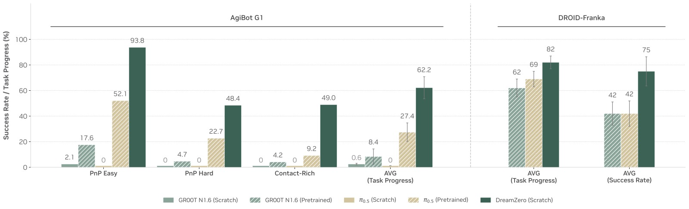
图8：已见任务（seen tasks）评估结果。横轴为三个任务类别（PnP Easy、PnP Hard、Contact-Rich Manipulation）及平均，纵轴为任务进度百分比。三种颜色分别代表：from-scratch VLA、pretrained VLA、DreamZero。
关键数据：
- From-scratch VLA：在所有类别上接近零分——即使简单 pick-and-place，VLA 偶尔能朝向正确物体但无法在未见环境中精确交互
- Pretrained VLA：最佳 baseline 平均 27.4%——得益于跨具身预训练中获取的具身知识
- DreamZero：平均 62.2%，超过最佳 VLA 基线 2 倍以上——且 DreamZero 没有使用额外的跨具身预训练
- 在 DROID-Franka 上，DreamZero 同样显著优于 pretrained 基线
4.3 主实验二：未见任务零样本泛化
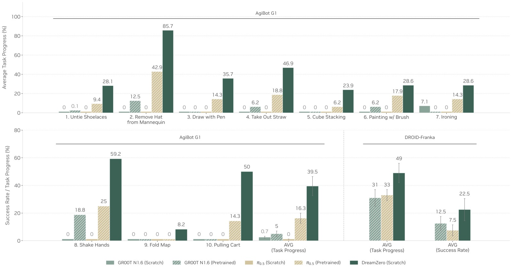
图9：未见任务（unseen tasks）零样本泛化。左半边为 AgiBot G1（10 个任务），右半边为 DROID-Franka。横轴为具体任务，蓝色条为成功执行（Success），橙色条为部分完成（Progress/Failure），总计为任务进度。底部为基线对比（from-scratch VLA 接近零分，pretrained VLA 分别为 16.3% 和 31%/33%）。
关键数据：
- From-scratch VLA：<1%（接近零）
- Pretrained VLA：平均 16.3%（AgiBot），31-33%（DROID）
- DreamZero：AgiBot 平均 39.5%，DROID 平均 49%（成功率达 22.5% vs 基线 7.5-12.5%）
- 强表现任务："Remove Hat from Mannequin"（85.7%），"Shake Hands"（59.2%）
关键定性观察：Pretrained VLA 常表现出"不管指令只管抓取"的行为，说明它们过拟合到训练中的主流行为（pick-and-place），而非真正理解新任务语义。DreamZero 则能对未见任务进行视觉规划并成功执行。
4.4 主实验三：后训练表现
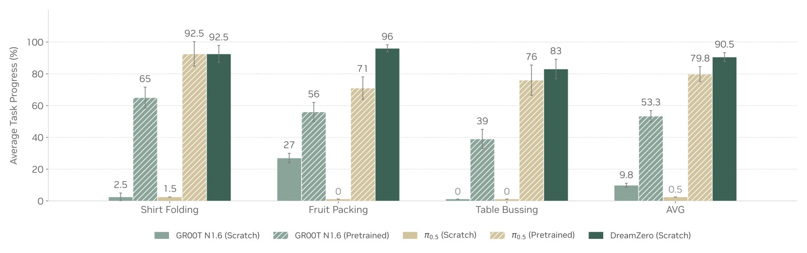
图10：后训练（post-training）结果。三个任务：Shirt Folding（33 小时）、Fruit Packing（12 小时）、Table Bussing（40 小时）。每个任务 10 次 rollout 的平均任务进度。DreamZero 在所有任务上持平或超越 pretrained VLA 基线。
- DreamZero 在三个后训练任务上持平或超越 pretrained VLA 基线
- From-scratch VLA 在后训练后仍然过度拟合训练场景，无法泛化到新环境（不同桌子高度、距离、物体摆放）
- 证明 WAM 的环境泛化能力在后训练后得以保留
4.5 主实验四：跨具身迁移
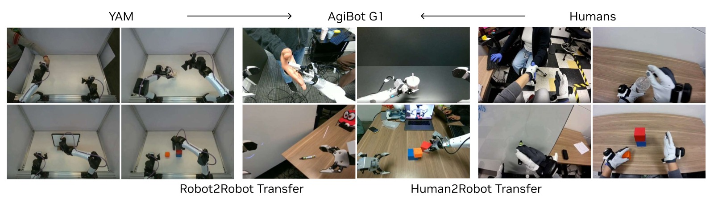
图11：跨具身迁移实验设计。上半部分（Robot-to-Robot Transfer）：使用 YAM 机器人采集 9 个未见任务的 72 条多视图轨迹（20 分钟），仅用视频预测目标（无动作标注），与 AgiBot 数据 1:1 混合再训练 10K 步。下半部分（Human-to-Robot Transfer）：使用人类第一视角演示，72 条轨迹（12 分钟）。
关键数据：
| 方法 | 任务进度 |
|---|---|
| DreamZero | 38.3% ± 7.6% |
| DreamZero + Human→Robot | 54.3% ± 10.4% |
| DreamZero + Robot→Robot | 55.4% ± 9.5% |
- 仅用 10-20 分钟视频数据（无动作标注），未见任务性能相对提升 42%+
- 机器人到机器人迁移效果最好（55.4%），因为具身差距更小
- 人类到机器人也有效（54.3%），尽管存在形态学差距和动态第一人称视角
- 关键意义：海量互联网人类视频数据（比机器人数据大数个数量级）可能成为 WAM 获取多样化技能的燃料
4.6 主实验五：Few-shot 新具身适应
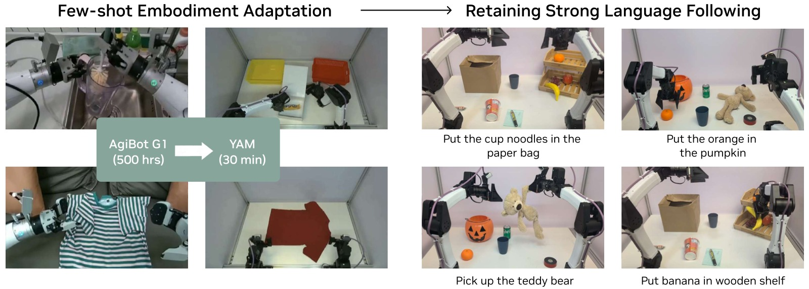
图12：Few-shot 新具身适应。将 DreamZero-AgiBot checkpoint 在新机器人 YAM 上用仅 30 分钟 play data（55 条轨迹，11 个任务）后训练，随后在新的 pick-and-place 变体上评估语言跟随能力。右图为生成的视频帧和实际执行对比——即使数据极少，视频-动作对齐仍然紧密。
- 仅用 30 分钟 play data（55 条轨迹，11 个任务）将 AgiBot 模型适应到 YAM 机器人
- 后训练后的策略保留了强大的语言跟随能力，甚至泛化到训练中未见的新物体
- 高效适应的两个因素：
- AgiBot 和 YAM 视觉外观相似（都是双臂并行夹爪）
- 更根本地，从预测视频中学习隐式 IDM 天生比直接策略学习更样本高效
4.7 消融实验
| 消融问题 | 配置 | 任务进度 |
|---|---|---|
| Q1. 数据多样性 | AR 14B + Repetitive | 33% ± 4.2% |
| AR 14B + Diverse | 50% ± 6.3% | |
| Q2. 模型规模 | AR 5B + Diverse | 21% ± 4.2% |
| AR 14B + Diverse | 50% ± 6.3% | |
| VLA 5B + Diverse | 0% | |
| VLA 14B + Diverse | 0% | |
| Q3. 架构 | BD 14B + Diverse | 50% ± 14.4% |
| AR 14B + Diverse | 50% ± 6.3% |
- 多样数据比重复数据改进 52%（33% → 50%）
- 14B 比 5B 改善 138%（21% → 50%）
- AR 和 BD 架构分数相近，但 AR 方差更小且动作更平滑
4.8 DreamZero-Flash 性能
| 方法 | 去噪步数 | 任务进度 | 推理速度 | 加速比 |
|---|---|---|---|---|
| DreamZero | 4 | 83% ± 6.1% | 350ms | 1x |
| DreamZero | 1 | 52% ± 10.2% | 150ms | 2.33x |
| DreamZero-Flash | 1 | 74% ± 10.1% | 150ms | 2.33x |
- Flash 在单步推理时恢复 4 步性能的 89%，同时速度快 2.33 倍
五、代码实现解读
5.1 项目结构
DreamZero 代码库基于 PyTorch 和 DeepSpeed ZeRO Stage 2，核心模型定义在 groot/vla/model/dreamzero/ 下：
dreamzero/
├── groot/vla/model/dreamzero/
│ ├── action_head/wan_flow_matching_action_tf.py # 核心 inference/training loop
│ ├── modules/
│ │ ├── wan_video_dit_action_casual_chunk.py # 因果 chunk DiT（核心架构）
│ │ ├── wan_video_dit.py # Wan DiT backbone
│ │ ├── flow_match_scheduler.py # Flow Matching 调度器
│ │ ├── flow_unipc_multistep_scheduler.py # 推理用多步调度器
│ │ ├── wan_video_vae.py # VAE 编码/解码
│ │ ├── wan_video_text_encoder.py # T5 文本编码器
│ │ ├── wan_video_image_encoder.py # CLIP 图像编码器
│ │ └── attention.py / cudnn_attention.py # 注意力实现
│ ├── transform/dreamzero_cotrain.py # 数据预处理/变换
│ └── backbone/ # 抽象 backbone 接口
├── scripts/train/ # 训练脚本
├── eval_utils/ # 评测工具（WebSocket 服务）
├── socket_test_optimized_AR.py # 推理服务器入口（AR 模式）
└── test_client_AR.py # 测试客户端
5.2 核心架构数据流
┌─────────────────────────────────────────────────────────────────────┐
│ DreamZero 架构全景 │
└─────────────────────────────────────────────────────────────────────┘
训练 (Training)
┌──────────┐ ┌──────────┐ ┌──────────┐
│ 多视图 │ │ 语言指令 │ │ 本体感知 │
│ 视频 o_t │ │ 文本 c │ │ 状态 q_t │
└────┬─────┘ └────┬─────┘ └────┬─────┘
│ │ │
▼ ▼ ▼
┌──────────┐ ┌───────────┐ ┌───────────┐
│ VAE │ │ T5-XXL │ │ State │
│ Encoder │ │ Text Enc │ │ Encoder │
└────┬─────┘ └────┬──────┘ └────┬──────┘
│ z_latent │ prompt_emb │ state_emb
│ │ │
└─────────────┼──────────────┘
│
┌──────────────▼──────────────┐
│ Flow Matching 加噪 │
│ z_noisy = t*z + (1-t)*ε │
│ a_noisy = t*a + (1-t)*ε │
└──────────────┬──────────────┘
│
┌──────────────▼──────────────────────────┐
│ Causal Chunk DiT (14B / 40 layers) │
│ ┌─────────────────────────────────┐ │
│ │ Self-Attn: causal chunk mask │ │
│ │ Cross-Attn: text embeddings │ │
│ │ RoPE: video + action + state │ │
│ └─────────────────────────────────┘ │
│ 预测速度场 v = [v_vid, v_act] │
└──────────────┬──────────────────────────┘
│
┌──────────────▼──────────────┐
│ MSE Loss = │
│ ||v_pred - v_target||² │
│ (视频 + 动作联合) │
└─────────────────────────────┘
推理 (Inference)
┌──────────┐ ┌──────────┐ ┌──────────┐
│ 初始图像 │ │ 语言指令 │ │ 初始状态 │
└────┬─────┘ └────┬─────┘ └────┬─────┘
│ │ │
▼ ▼ ▼
┌──────────┐ ┌───────────┐ ┌───────────┐
│ VAE+CLIP │ │ T5-XXL │ │ State │
│ Encode │ │ Text Enc │ │ Encoder │
└────┬─────┘ └────┬──────┘ └────┬──────┘
│ │ │
└─────────────┼──────────────┘
│
┌──────────────▼──────────────────────────┐
│ ❶ Prefill: 干净帧 -> KV Cache（t=0） │
└──────────────┬──────────────────────────┘
│
┌──────────────▼──────────────────────────┐
│ ❷ AR Loop (每次 ~150ms) │
│ │
│ ┌──────────────────────────────────┐ │
│ │ 从噪声开始 joint denoising │ │
│ │ Flow Matching t: 0 → 1 │ │
│ │ ┌────────────────────────────┐ │ │
│ │ │ @each step: │ │ │
│ │ │ if CosSim(v_i, v_{i-1}) │ │ │
│ │ │ > ε: skip DiT (cache) │ │ │
│ │ │ else: v = DiT(z,a; KV) │ │ │
│ │ │ x_{i+1} = x_i + v·Δσ │ │ │
│ │ └────────────────────────────┘ │ │
│ └──────────────────────────────────┘ │
│ │
│ 输出: action_chunk (48 步), video_pred │
└──────────────┬──────────────────────────┘
│
┌──────────────▼──────────────────────────┐
│ ❸ Async Execution + Cache Update │
│ │
│ action_chunk ──► 异步执行（机器人） │
│ │
│ 真实观测 o_real ──► VAE │
│ z_real ──► KV cache (替换预测帧) │
│ │
│ 丢弃预测的 video latent │
│ 保留 KV cache 中的视觉历史 │
└──────────────┬──────────────────────────┘
│
▼
循环 ❷ （直到任务完成）
5.3 关键代码模块映射
论文 Algorithm 1（Training）→ wan_flow_matching_action_tf.py:forward()
# Line 603-813: 完整训练 forward pass
def forward(self, backbone_output, action_input):
# 1. 编码视频 → latents (VAE)
latents = self.encode_video(videos, ...)
# 2. 编码文本 → prompt_embs
prompt_embs = self.encode_prompt(text_ids, attn_mask)
# 3. 编码图像 → clip_feas, y
clip_feas, ys, _ = self.encode_image(image, ...)
# 4. 采样时间步 → 加噪
noise = torch.randn_like(latents)
timestep_id = torch.randint(...) # uniform
noisy_latents = scheduler.add_noise(latents, noise, timestep)
# 5. 模型前向
video_noise_pred, action_noise_pred = self.model(
noisy_latents, timestep, ..., context=prompt_embs,
state=state_features, action=noisy_actions, ...
)
# 6. 联合损失
dynamics_loss = MSE(video_noise_pred, training_target)
action_loss = MSE(action_noise_pred, training_target_action) * action_mask
loss = dynamics_loss + action_loss
论文 Algorithm 2（Inference）→ lazy_joint_video_action()
# Line 973-1338: 推理 pipeline
def lazy_joint_video_action(self, backbone_output, action_input):
# 1. Prefill: clean frames → KV cache
if current_start_frame == 0:
self._run_diffusion_steps(..., update_kv_cache=True)
# 2. AR loop: 联合去噪
for timestep in scheduler.timesteps:
if should_run_model: # DiT caching
predictions = self._run_diffusion_steps(
noisy_input, timestep, action=noisy_action, ...
)
flow_pred = flow_uncond + cfg_scale * (flow_cond - flow_uncond)
noisy_input = scheduler.step(flow_pred_transpose, timestep, noisy_input)
noisy_action = scheduler_action.step(flow_pred_action, timestep, noisy_action)
# 3. 输出
return {"action_pred": latents_action, "video_pred": output}
注意力掩码实现 → wan_video_dit_action_casual_chunk.py
# 核心: 因果 chunk 注意力 + 多种 RoPE (video/action/state)
def causal_rope_action_apply(x, freqs, freqs_action, freqs_state,
action_register_length, num_action_per_block,
num_state_per_block, action_state_index):
# 为 video/action/state tokens 应用不同的 RoPE 频率
# action token 和 state token 使用独立频率
# 实现论文中 Y3 关注 C0,C1,C2 的注意力模式
DreamZero-Flash 噪声解耦 → wan_flow_matching_action_tf.py:680-731
# Line 680-731: 解耦噪声采样
if decouple_video_action_noise:
# 视频: Beta(α,β) 偏向高噪声
video_noise_ratio = self.video_beta_dist.sample(...)
timestep_id = ((1.0 - video_noise_ratio) * 1000).long()
# 动作: 独立 uniform
timestep_action_id = torch.randint(0, 1000, ...)
DiT Caching → should_run_model()
# Line 943-971: 自适应 DiT 步骤跳过
def should_run_model(self, index, current_timestep, prev_predictions):
if not dynamic_cache_schedule: return dit_step_mask[index]
# 计算相邻速度向量的余弦相似度
sim = cosine_similarity(v_last, v_prev).mean()
# 相似度 > 阈值: 跳过 N 步
for threshold, countdown in [(0.95, 4), (0.93, 2)]:
if sim > threshold: skip_countdown = countdown; return False
return True
5.4 数据处理流程
┌──────────────────────────────────────────────────────────────┐
│ DreamTransform Pipeline │
└──────────────────────────────────────────────────────────────┘
原始数据 处理后
┌────────────────┐ ┌─────────────────────────┐
│ video (T,V,H,W)│───────▶│ _prepare_video() │
│ │ │ 多视图拼接为 2x2 grid │
│ │ │ DROID: wrist(顶行全宽) │
│ │ │ left|right(底行) │
│ │ │ AgiBot: head|right │
│ │ │ left |black │
└────────────────┘ └─────────────────────────┘
│
┌────────────────┐ ┌────────▼────────────────┐
│ language (str) │───────▶│ _prepare_language() │
│ │ │ 多视图描述增强 │
│ │ │ "A multi-view video │
│ │ │ shows that a robot..." │
└────────────────┘ └─────────────────────────┘
│
┌────────────────┐ ┌────────▼────────────────┐
│ state (T,D) │───────▶│ _prepare_state() │
│ │ │ pad to max_state_dim │
└────────────────┘ └─────────────────────────┘
│
┌────────────────┐ ┌────────▼────────────────┐
│ action (T,D) │───────▶│ _prepare_action() │
│ │ │ pad to max_action_dim │
└────────────────┘ └─────────────────────────┘
六、局限性
-
推理延迟仍然较高：虽然通过一系列优化达到了 7Hz，但相比 VLA 在消费级 GPU 上可达 20Hz+ 仍有差距。需要 2x GB200 级别的硬件。
-
高精度任务受限：在需要亚厘米级精度的任务（如钥匙插入、精细装配）上继承了行为克隆的通用局限。多样预训练策略优先覆盖广度，可能忽视了这类高精度操作所需的密集演示。
-
视觉上下文窗口有限：当前最大上下文为 8 个 latent 帧（约 6.6 秒），对于需要长程记忆的任务可能不够。
-
多具身联合训练：目前每个具身单独训练，未探索多具身联合训练的潜力。
-
跨具身迁移成功率仍中等：虽然相对提升显著，但绝对成功率（~55%）仍有较大提升空间。
-
失败主要源于视频预测：如果视频 backbone 预测错误，策略会忠实地执行错误的视觉计划——这在安全关键场景中可能带来风险。
七、关键概念速查
| 概念 | 解释 |
|---|---|
| WAM (World Action Model) | 基于预训练视频扩散 backbone，联合预测视频和动作的机器人基础模型 |
| VLA (Vision-Language-Action) | 从 VLM 初始化、直接预测动作的传统机器人模型 |
| Flow Matching | DreamZero 使用的生成建模目标，预测从噪声分布到数据分布的速度场 |
| IDM (Inverse Dynamics Model) | 从预测的视觉未来中提取可执行动作的隐式模型 |
| DiT (Diffusion Transformer) | DreamZero 的 backbone 架构，基于 Transformer 的扩散模型 |
| KV Cache | 自回归推理时缓存 Key-Value 注意力张量的技术，加速推理 |
| CFG (Classifier-Free Guidance) | 通过结合条件和无条件预测来增强生成质量的技术 |
| DreamZero-Flash | 解耦视频和动作噪声调度以支持少步/单步去噪的模型级优化 |
| Chunk-wise Generation | 每次自回归生成固定数量 latent 帧（K=2）和对应动作 |
| Teacher Forcing | 训练时基于干净前序 chunk 条件化当前 noisy chunk 的策略 |
| Savitzky-Golay Filter | 用于平滑生成动作 chunk 中高频噪声的数字滤波器 |
| NVFP4 (E2M1) | NVIDIA Blackwell 架构的 4-bit 浮点量化格式 |
八、讨论与未来方向
- WAM 缩放定律：类似 LLM 的缩放定律，WAM 在模型规模、数据规模、计算量之间的关系尚需探索，预计 VAM 的动作缩放曲线将比 VLA 更陡峭。
- 大规模人类视频数据：当前实验仅使用 12 分钟室内人类数据。大规模第一人称人类视频（如 Ego4D、EgoDex、Action100M）可能带来更强的下游迁移。
- 长程推理：需要 System 2 规划器或大幅扩展视觉上下文窗口来实现鲁棒的长程执行。
- WAM 时代的具身设计：更高自由度需要更多 play data，但更像人的具身可能从互联网人类视频中受益更多——人形机器人可能因数据优势而胜出。